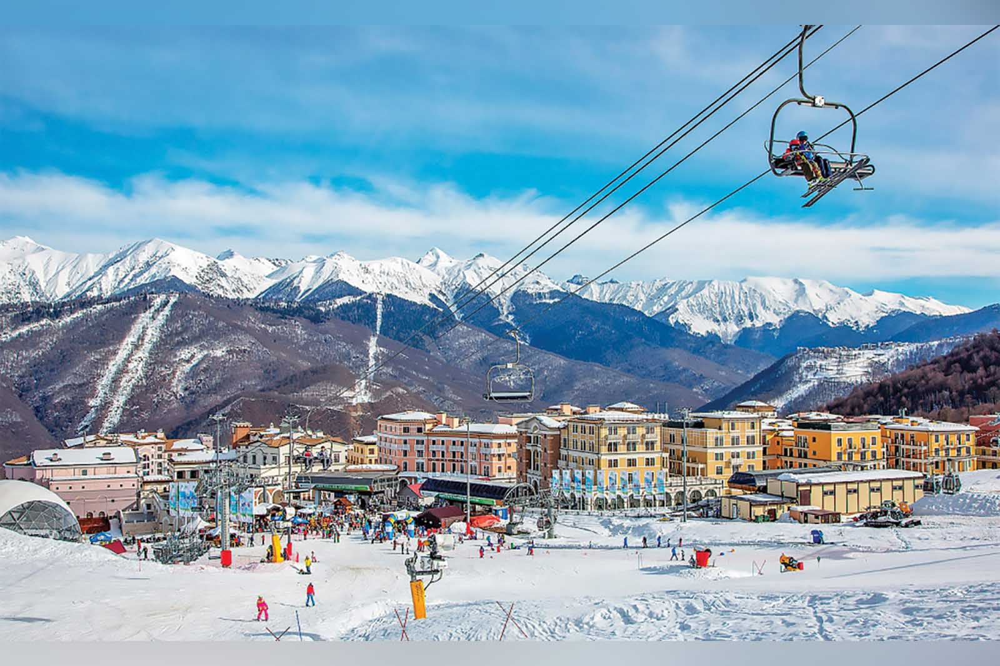
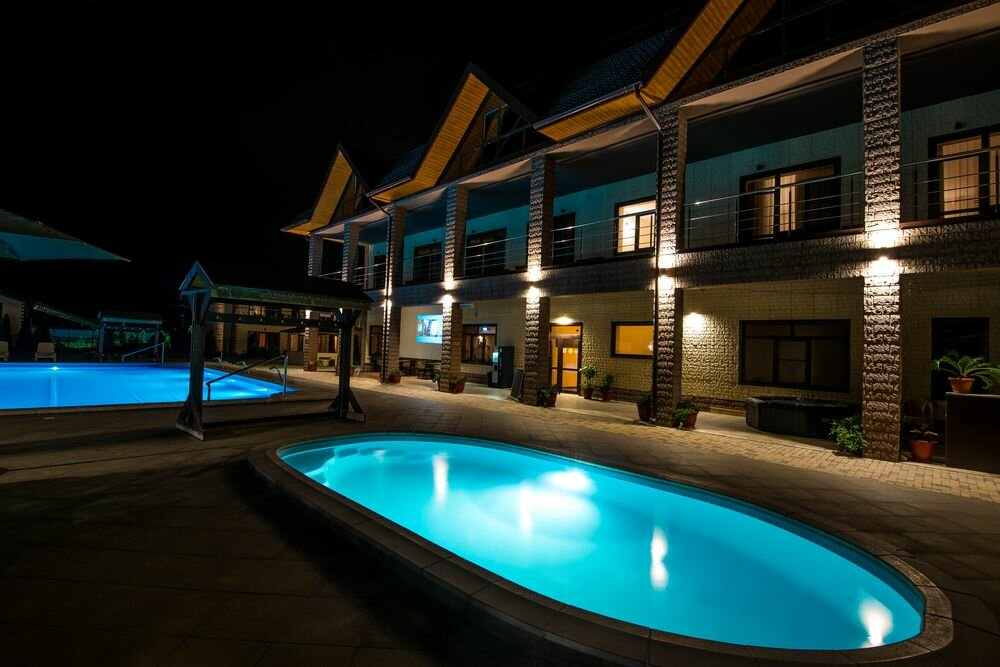
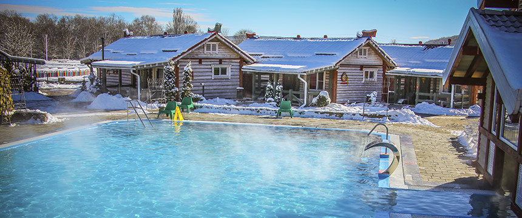
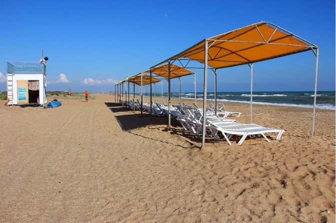
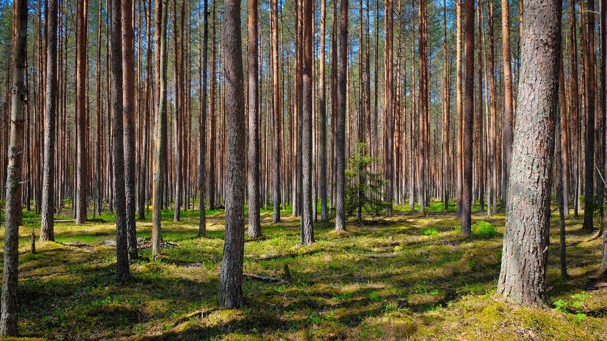
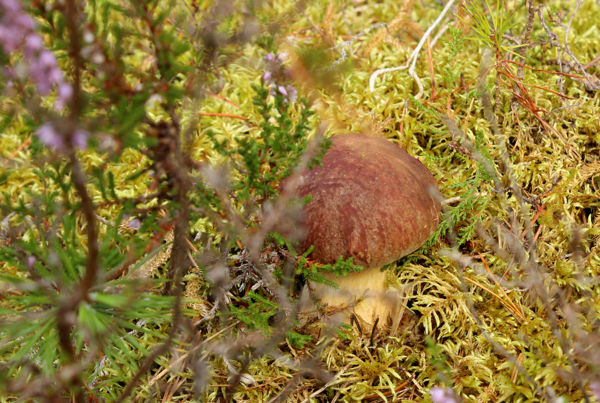
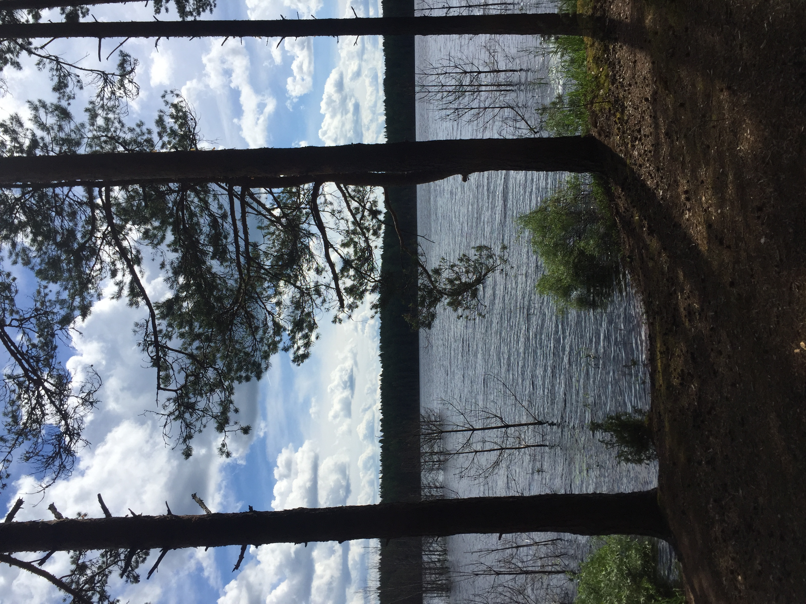
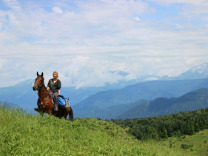
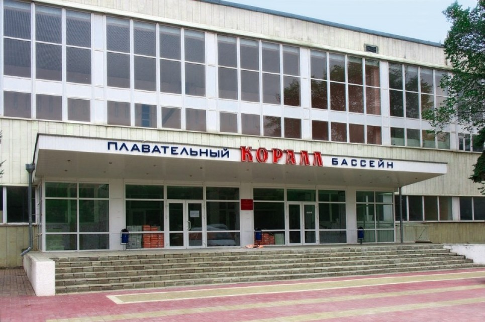

Неотъемлемой частью жизни любого человека является отдых. Выходные, праздничные дни - лучшее время для семейного отдыха. Моя семья предпочитает активный отдых на свежем воздухе.
Зимой
  В зимнее время - это стремительные спуски на горнолыжных курортах и плавание в термальных источниках Краснодарского края и Адыгеи.
Летом
   В летнее время - отдых на побережье Чёрного моря и прогулки по лесу с отдыхом на лесных озёрах в Северо-Западной части нашей Родины.
Весной и осенью
 В межсезонье (обычно весной) - конные прогулки в предгорьях Большого Кавказа и посещение плавательного бассейна.
На странице использованы фотографии с сайтов: rasputinhotel.ru и kremterm.com.